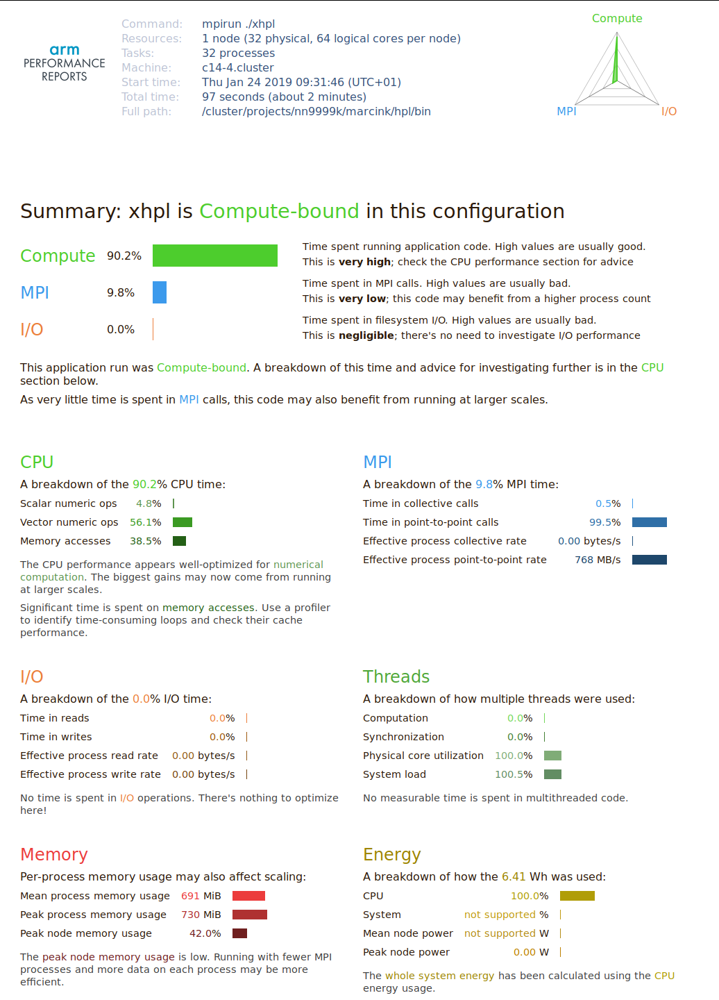

LINPACK benchmark {#linpack-benchmark}¶
The LINPACK benchmark, used by the TOP500 HPC list, solves a dense system of linear equations and is used to measure the floating-point capabilities of CPUs.
The LINPACK sourcecode is
compiled using the Intel icc compiler as follows:
$ module load intel/2018b
$ cd hpl-2.3
$ ./configure CC=mpicc CXX=mpicxx --prefix=/cluster/projects/nn9999k/marcink/hpl LDFLAGS=-lm
$ make
To run, the benchmark requires a configuration file
(HPL.dat) to reside in the same directory as the
xhpl binary. We run the benchmark on 32 cores of a
single compute node (all communication can be done through shared memory):
$ mpirun -np 32 ./xhpl
[...]
T/V N NB P Q Time Gflops
--------------------------------------------------------------------------------
WR11C2R4 50000 192 4 8 86.82 9.5985e+02
[...]
The program reports computing at 960 GFLOP/s. Looking at the nominal CPU frequency on Fram (E5-2683 v4 @ 2.1GHz), the peak FLOP/s performance is 2.1 GHz*clock/core * 16 FLOP/clock * 32 cores = 1075 FLOP/s. During the run the cores were actually running at ~2.3-2.4GHz, hence LINPACK achieves between 80% and 90% of the theoretical peak. This is a very good result, not often achieved by real-world codes. Clearly, the code is compute bound.
The same run with profiling reports:
$ perf-report -n 32 ./xhpl
[...]
T/V N NB P Q Time Gflops
--------------------------------------------------------------------------------
WR11C2R4 50000 192 4 8 89.73 9.2871e+02
[...]
Hence, performance with profiling is roughly 3% lower than without. While the profiling overhead is not significant, the entire profiled run (together with setup and final data collection and interpretation) took much longer than the LINPACK benchmark itself: 15 minutes with profiling vs. 1.5 minute without profiling. This extension, which might be different for individual codes and depends on the number of MPI ranks, must be accounted for by the user when submiting profiled jobs the queuing system.
Below is the HTML performance summary produced by ARM
perf-report:

As expected, the code is Compute-bound, but there is a visible communication component. The report correctly suggests that there is not much to do in terms of per-core optimizations, and that speed improvements are achievable at scale.
Previous estimates on floating point efficiency have shown that the code runs at 80-90% of peak FLOP/s performance. However, in the above report FP operations only account for ~60% of the CPU time, while the rest is attributed to memory access. As in the case of STREAM, this is an artifact of profiling: during runtime the memory and floating point operations are as much as possible overlapped by the CPU. Hence it is sometimes difficult to say, which class of instructions is the bottleneck. That’s why such a performance report should be treated with a grain of salt.